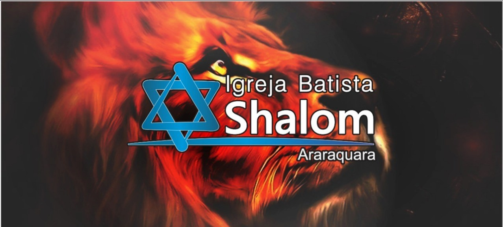
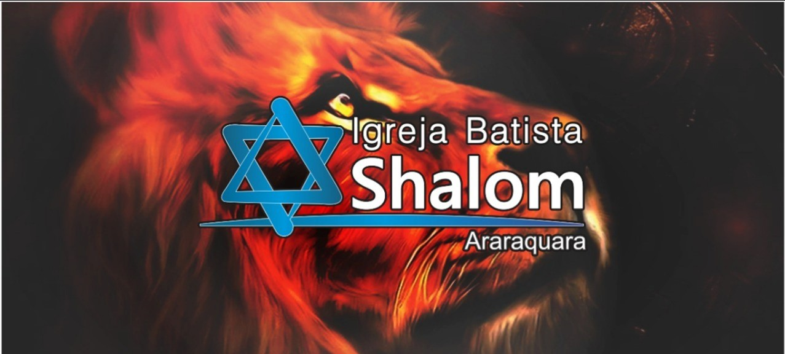

QUEM SOMOS.
comunidade de Adoradores, envolvido na busca e salvação do perdido, fazendo dele um discípulo de Jesus Cristo.
VISÃO.
Ser uma igreja acolhedora que inspira as pessoas a viverem os propósitos de Deus.
MISSÃO.
Conduzir pessoas a uma vida centrada em Cristo para se tornarem verdadeiros discípulos de Jesus.
Através de:
• Ensino bíblico para transformação de vida.
• Vida de oração.
• Dedicação a Missões, evangelização e discipulado.
VALORES
Amar a Deus, amar as pessoas e servir à todos.


 
